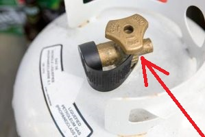
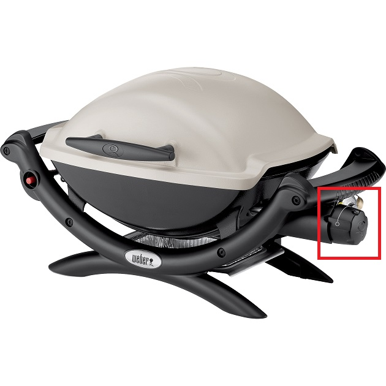
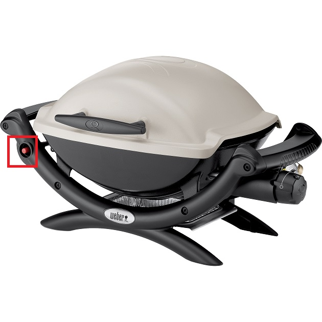

<header>
    <title>1209 Glen grill</title>
</header>
<body bgcolor=#cccccc>
<font face=arial size=+3>
    To light the grill:<br>
    Under the grill, open the tank valve by rotating counter clockwise<br>  <br>
    Turn the dial until it is set to the little lightning bolt<br> <br>
    Push the starter button<br> <br>
    Turn the dial to the level of heat you want<br>  <br>
</ul>
</font>
<hr>
    <table bgcolor=#cccccc border=0 width=100% >
        <tr>
            <td>
                e-mail Nelson: <a href='mailto:nelson.sproul@gmail.com'>nelson.sproul@gmail.com</a>
                call/text Nelson: <a href='tel:2096777685'>(209)677-7685</a>
            </td>
            <td>
                e-mail Deirdre: <a href='mailto:dvsproul@gmail.com'>dvsproul@gmail.com</a>
                call/text Deirdre: <a href='tel:4153706422'>(415)370-6422</a>
            </td>
            <td><a href='index.html'>1209 Glen guide home page</a></td>
        </tr>
    </table>
